ProjectNight.com
Wednesday Night Project Night, Page 4
Most recent night first.
12 December 2007: Matt's shop.
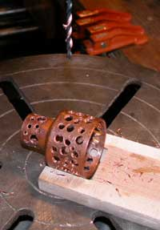
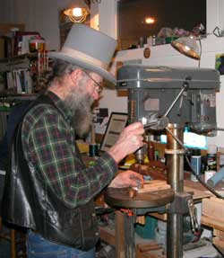
The ongoing odyssey of the ongoing SubKindler was the feature project, mostly because the other projects of the night were in the discussion phase, as usual.
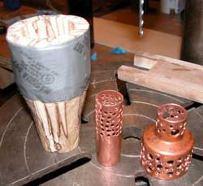
The Scotch was disadvantaged by the peach moonshine left over from a previous Fairbanks Scotch Society meeting.The latest untested and barely theorized design of the SubKindler junction device involves whatever off-the-shelf fittings fit things, which happened to be copper, that have then been reduced in mass, as you can see, in an attempt to minimize the heat transfer from the heat gun to the wood base for the turkey baster bag. It may work, or it may not work. The proof will be in the first plug-in.
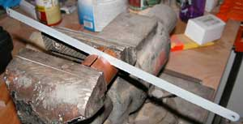
Some shops have the hack saw blade, and some have the hacksaw, and some not both.
The full report on the SubKindler is anticipated, ah, soon.
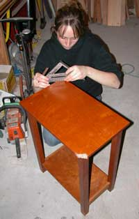
5 December: Matt's shop. When a friend's dog chews the corner of your best piece of furniture, ProjectNight.com offers wood therapy sessions.
It is magnificent when an actual industrious person shows up.
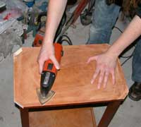
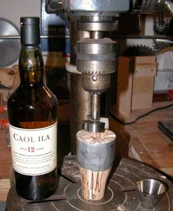
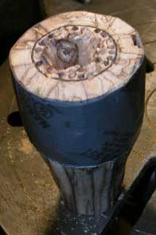
The Caol Ila project progressed well, with scant interference from the spalted birch SubKindler project.
After various tool analyses, the birch wood project came down to just a lot of drilling and gouging and scraping and carving and some Dremel work. The wood alternated between pith and remarkably hard areas.
Progress was made. The SubKindler may be completed after a few more Caol Ila projects.
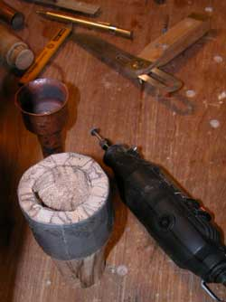
The Lee Something brand wood chisels were discussed as only wood people can discuss precision hand chisels.
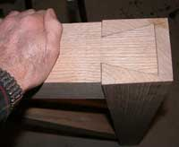
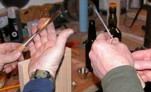
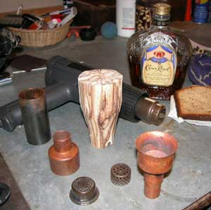
28 November 2007: Duff's shop. The consequences of yet another inherently worthless paper currency, this time the US dollar, whose public perception of value was destroyed (in progress) by its government's insatiable war costs (printing more money, seizing more tax money, effecting international retaliation) was discussed in relation to the ideal location for one's most comfortable existence in a country without an international hard currency. There was a difference of opinion among the several most ideal, exact locations (highly secret), while the rest of the country suffers severely from war-based currency bankruptcy. Or something like that.And the section of nicely spalded birch recovered from the wood shed at that very same shop several years ago was finally cut for an ideal project, the sub-kindler, as you can see. Well, the top belled copper fitting transferred too much heat from the modified torch striker cup that perfectly fit the chrome molly tube from Jon's scrap bin, held in place by the other copper fitting, so the less-conducting spalded birch replacement piece to attach the turkey baster oven bag was made, quite logically, as I am sure you would concur, especially after a snap of the Crown. A full report will be presented after and if the new piece is completed and works if it does.
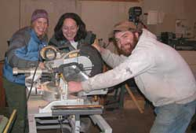
Decorative concrete cleaning and staining processes were discussed, for the new kitchen of course, not the shop.
The chop saw project was secret, as you can see, or maybe just a staged photo. Easy to fool the photo guy. He only knows how to take pictures. That is why we let him attend ProjectNight where highly secret projects are often, ah, discussed.
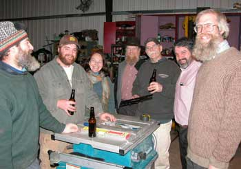
21 November: Jon's shop. What does one do when two beer brewers show up at Project Night, with a keg and a selection of specialty brews?
Call it a project, of course.
Jon has a real shop, as indicated in the photos of the real shop machinery, some of it with computers.
Other projects advanced. The last of the batch of 375 bullets got polished for the next step in the forever ongoing pen production.
The heat gun project (Sub Kindler) was advanced with a scrap tube of chrome molly steel that fits the barrel perfectly. Next will be the fittings on top of the tube. Expect a full report.
Stories were told about the Snowstar, the covered snow machine sled with solar panels and batteries, used by people who claim they are doing real science while out in the far frozen north.
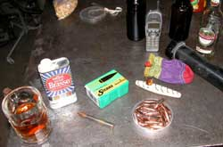
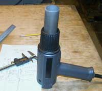
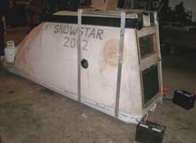
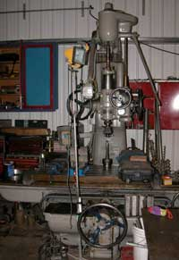
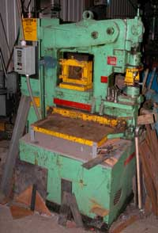
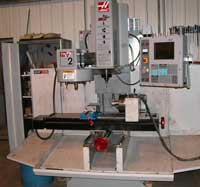
Stories were told of a classic old commercial heavy machinery shop in Massachusetts or some such place, by the person who was raised working in it. Stories of farm life do not sound so bad now.
No power machines were turned on, to avoid any interruption of the beer project. Even the bullets were polished by hand because the electric buffer was too far away from keg and project story telling. Project night is no smuck operation.
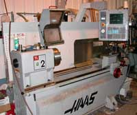
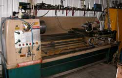
Not far away from Jon's shop, around the corner and up the draw, is the ice tower project. That will be good for claiming that projects are in progress, all winter if the water does not freeze in the pipes.
14 November: Matt's shop. It happened. Web slave absent. But next Wednesday it will be at John's Shop. John has a real shop. Stay tuned, or show up at Jon Holmgren's Shop in Fox.
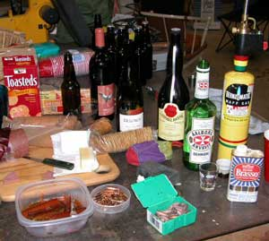
7 November: Tim's Shop. It was going to be a big night, really big. But as usual, there are so many projects in Fairbanks that everyone was doing projects everywhere else. It was left to the rest of us to get a little done. A little bullet polishing for pens. A little ski waxing for skiing. And some stories that got a little too carried away to write about.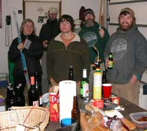
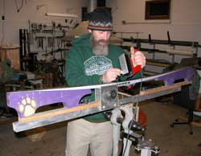
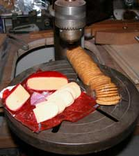
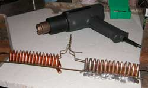
31 October: Matt's shop. Successfully hiding from goblins, each member of the entire ProjectNight crew present achieved astonishing achievements. There was a little difficulty with tab A not matching slot B, but not all tabs always match all slots.A saw was sharpened. A drawer neared completion. The relative merits of sharpening stones were pontificated upon, while sharpening a pocket knife to prepare the evening's gourmet drill press presentation. The 375 pens advanced at their usual pace, one step closer to the next step. The project technician finally got the lead out. The heat gun modification for the plant particle analysis project was redesigned. The Juneau emergency escape plan was refined. The ice tower pipe layout was rhetorically laid out. The dog barked at, ah, whatever walked by in the woods. Well of course there was good ale and Gamel Dansk.
The Juneau shop is rumored to be nearing a shop report. There is also a rumor of the Juneau shop crew being out sailing and fishing.
Some rather detailed information about certain neural synaptic impediments of the Commander In Chief and his dutifully gullible minions was introduced to elevate the heat gun output. And that is the full report.
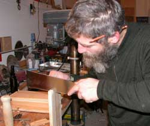
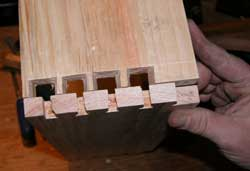
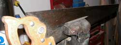
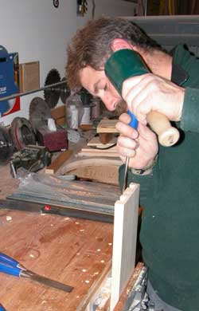
24 October: Matt's shop. Actual projects were perpetrated.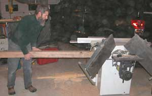
Yes, that is oak dust in the air.Years ago a bundle of surplus solid oak 4"x 4" dunnage was acquired from one of the oil pipeline support companies. The wood sat out in the trees with the other stuff that might be useful some day. Such a day arrived. The wood was run through a planer, and sections of it will be a noticeably impressive part of a house. It is just such rare events that sustain all the other piles of old stuff sitting out among the trees, sinking into the moss, making otherwise nice houses look like Alaska-style junk yards.
Hey, if anyone has some nice old high quality hardwood book shelves out sinking into the moss, or even high quality hardwood boards, the prestigious Alaskan Alpine Club world headquarters needs some bookshelves. No, the club does not have any money. They are mountain climbers.
The wood slave was also tasked with the job of matching a classic old dove tail joined drawer for a historic mining office file cabinet. We have no idea why such productivity was effected during this Project Night, but a committee has been assigned to solve the problem. Government experts will be consulted.
The 375 H&H pen project was advanced. You should have seen the guy drilling the base of the bullets, gripping the bullet, taking the picture, and pushing the drill press handle down with his elbow. The OSHA guy held his beer so he would not spill it. Oh, Liz, a couple of those will be your high caliber ear rings, but first more beer must be consumed, and that takes awhile. It must be done safely.
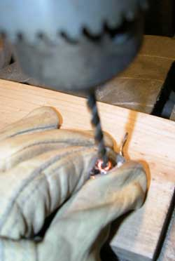
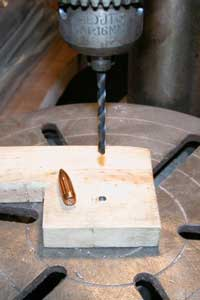
Page 5 December 07 -- February
08
Page 6 February 08 --- March 08
Page 7 March 08 ------ October
08
Page 8 October 08 ---- January
09
Page 9 February 09 --- November
09
Page 10 November 09 - Present
Page 3 July 07 --------- October
07
Page 2 April 07 -------- June
07
Page 1 November 06 -- March 07